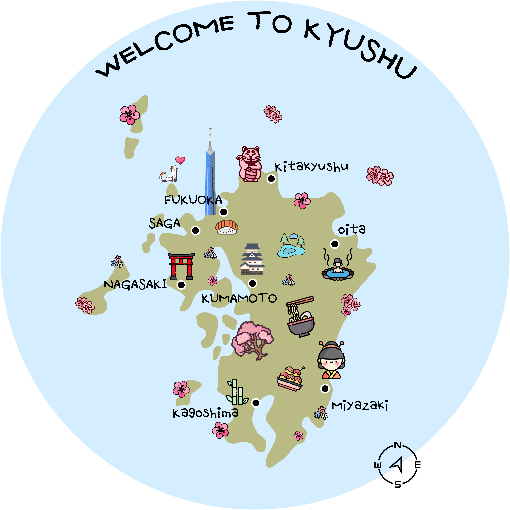
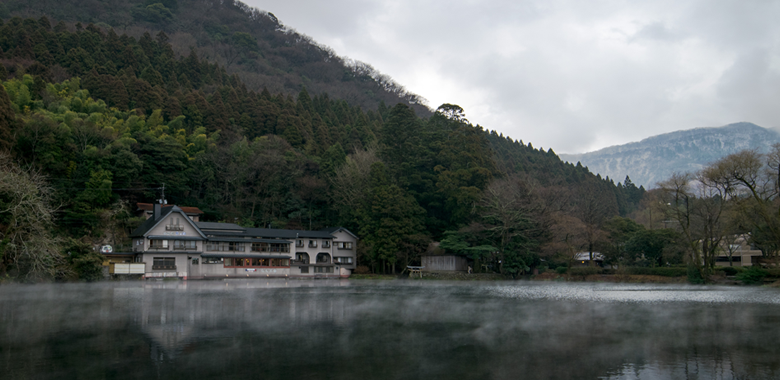
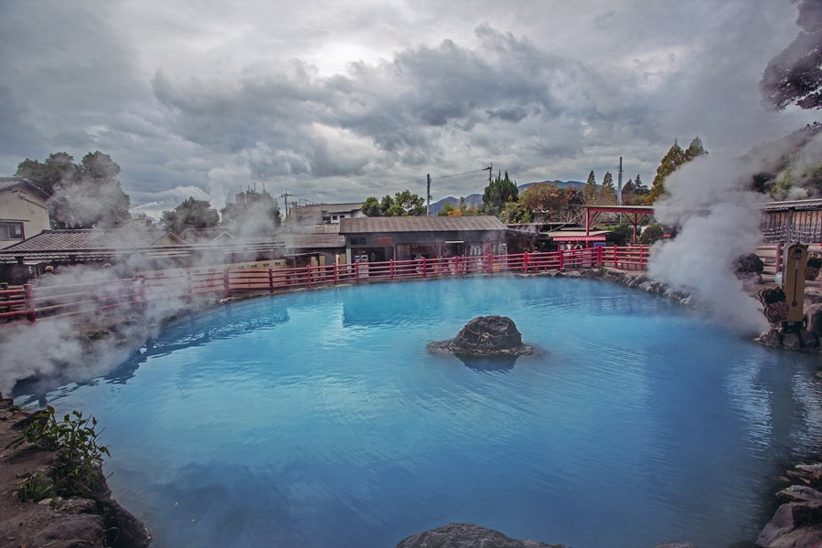

WELCOME
to KYUSHU
일본 열도를 구성하는 4대 섬중 가장 남쪽에 있고, 또는 그 섬을
중심으로 하는 지방 입니다.
규슈에는 7개의 현이 있는데 후쿠오카, 사가, 나가사키, 오이타,
쿠마모토, 미야자키, 가고시마 등이 있다.
일본 열도의 남서단에 위치한 규슈 지방. 벳부, 구로카와, 유후인
등 온천 대국으로도 알려져 온천수와 경치를 다양하게 즐길 수
있습니다.
또한 이국적인 정취의 분위기가 감도는 나가사키현을
비롯해 역사 및 문화를 느낄 수 있는 건조물이 많이 있습니다.
또 풍부한 자연이 낳은 다양하고 풍부한 농산물로 지역마다
역사 깊은 향토 요리가 다채롭고 개성적이며 비교적 물가도 싼
편으로 많은 관광객이 방문합니다.
추천 여행지

유후인❚오이타
큐슈 하면 빠질 수 없는 온천마을 유후인.
후쿠오카에서 기차로 약 2시간이면 도착 할 수 있는 근교 여행지다.
아기자기하고 소박한 분위기가 특히나 매력적인 곳으로 남녀노소 할 것 없이 꾸준히 사랑 받고 있다.
온천 마을로 유명한 만큼 마을 곳곳에는 전통 료칸이 위치해 있고 정겨운 풍경이 여행객들을 맞이해주고 있다.

벳부❚오이타
벳푸는 온천탕, 관광 명소와 함께 편리하게 찾아갈 수 있는 호수와 산이 매력적인 곳입니다.
다채로운 역사와 보기 드물게 뛰어난 자연 경관을 갖춘 온천 휴양지가 기억에 남을 여행을 선사합니다.
목욕하기에 적합하지는 않지만,
벳부 지옥온천은 놓칠 수 없는 볼거리이며 다채로운 색으로 유명한 온천수를 눈에 담아보세요.
하카타❚후쿠오카
후쿠오카는 규슈 북쪽 끝에 위치하며,
교통편이 훌륭하게 갖춰져 있어 어디서든 편리하게 이동할 수 있습니다.
대표 음식으로는 스시를 비롯한 여러가지 해산물 요리, 꼬치구이인 야키토리, 겨울이면 몸을 따뜻하게 데워주는 모쓰나베, 돈코츠(돼지뼈 육수) 라멘 등이 있습니다.
음식, 각종 쇼핑시설들이 들어서 있으며 계절마다 각종 이벤트도 개최되며 즐기늩 테마에
따라 색다른 여행을 즐길 수 있는 곳으로 가득합니다.